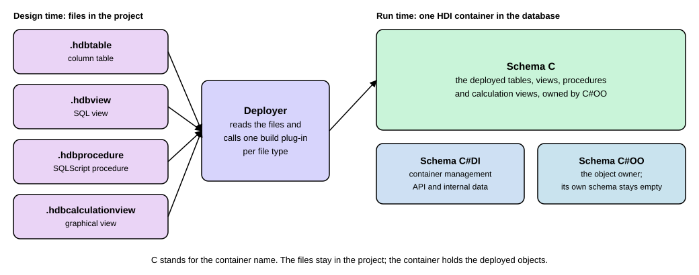

SAP HANA Basics
|
This content was generated with the assistance of AI and should be verified against the official documentation before being relied on in production. |
Every SAP S/4HANA system and most applications built on SAP Business Technology Platform keep their data in one database product: SAP HANA. A newcomer meets it in three ways. A developer sees it as the database that stores tables in columns and runs a SQL dialect called SQLScript. A modeler sees it as the place where graphical views called calculation views are built. A CAP developer sees it as the production database that replaces the SQLite database used on a laptop. This page explains those ideas in plain words, shows what an HDI container is, walks through a small SQLScript procedure for the expense claims of Example Trading Co., and ends with the commands that move a CAP project to SAP HANA Cloud. It is written against the SAP HANA Cloud documentation as shown on 2026-11-13 (version QRC 3/2026) and CAP 10.2 (command line tools 10.2.1). It applies to SAP HANA Cloud, which is the database that CAP is validated against; SAP S/4HANA runs on SAP HANA too, but most of what is shown here (HDI containers, calculation views as files in a project) is about the side by side applications of SAP BTP, not about the tables of an S/4HANA system. SAP HANA Cloud needs an SAP BTP account, so nothing on this page that talks to SAP HANA was run: those listings are labeled "requires an SAP BTP account; not run here". The one listing that was run is a SQLite stand-in that shows what the procedure computes, and it is labeled as SQLite, not SAP HANA.
Before you read
-
What Is SAP: the products that run on SAP HANA.
-
Architecture and the Virtual Data Model: the database tier of SAP S/4HANA, where SAP HANA sits.
-
CAP Getting Started: the SQLite development database that SAP HANA replaces in production.
-
Data Definition Language (DDL) and DML Queries: the SQL that SQLScript extends.
Key terms
-
SAP HANA: the database product from SAP that keeps its data in main memory and stores tables in columns by default.
-
Column store: the storage format that keeps the values of one column together, which suits queries that read a few columns of many rows.
-
HDI container: an isolated set of database schemas that SAP HANA Deployment Infrastructure fills from design-time files.
-
Calculation view: a view modeled graphically from nodes such as join, projection and aggregation.
-
SQLScript: the SQL extension of SAP HANA for procedures, functions and table variables.
-
SAP HANA Cloud: SAP HANA offered as a service on SAP BTP.
What SAP HANA is and why SAP builds on it
SAP HANA is a relational database: it has tables, SQL and transactions like the databases covered in the SQL section. What SAP stresses is how it uses modern hardware. The SQLScript reference says that the SAP HANA database "is optimized for modern technology trends", with data residing in main memory and massive parallelization on multi-core CPUs. The reasoning that follows is the main idea to carry through this page. An application server written in ABAP or Java could read rows out of the database and loop over them one at a time, but copying a large amount of data to the application server costs processor and transfer time, and one-row-at-a-time loops are hard to optimize. So SAP HANA lets you push data-intensive logic down to the database, where set-oriented SQL can run in parallel. ABAP developers know this idea as code pushdown, which ABAP for SAP HANA and Code Pushdown covers from the ABAP side. This page covers the database side.
Column store and row store
A table can be stored in two ways. A row table keeps all the values of one row next to each other, which is natural when you read or change single records. A column table keeps all the values of one column next to each other, which is natural when a query adds up one or two columns over millions of rows. SAP’s CREATE TABLE reference gives this rule of thumb: if most access touches many records but only a few attributes, use column-based storage; if most access selects a few records with all attributes, row-based storage is preferable. It adds that the database uses a combination of both.
In the statement you choose with the keyword ROW or COLUMN. If you give neither, the default is a column table for
an ordinary table and a row table for a temporary table. That is why the table that CAP generates for the lab project of
this site starts with the words COLUMN TABLE, as the page on
Deploying CAP: HANA, XSUAA and MTA shows from a real build:
COLUMN TABLE sap_guide_expenses_Claims (
ID NVARCHAR(36) NOT NULL,
title NVARCHAR(80),
status NVARCHAR(1) DEFAULT 'N',
amount DECIMAL(9, 2),
PRIMARY KEY(ID)
)Source: the generated file gen/db/src/gen/sap.guide.expenses.Claims.hdbtable of the lab project, shortened to the business columns, as shown on the CAP deployment page of this site; the table is the reduced lab version (status and amount), not the full ZEXP_CLAIM table of the ABAP pages. Column and row storage: SAP HANA Cloud, SAP HANA Database SQL Reference Guide: CREATE TABLE Statement
Older books and tutorials about SAP HANA spend a lot of space on this choice because tables were often created by hand in a database tool. On SAP HANA Cloud, a CAP project produces the table definition for you from a CDS entity, so the column store is simply what you get unless you ask for something else.
HDI containers: how objects get into the database
A developer who writes CREATE TABLE by hand into a shared schema ends up with a database that nobody can rebuild.
SAP HANA Deployment Infrastructure (HDI) solves this by separating two things. The files in your project describe the
objects you want: a table, a view, a procedure, a calculation view. The database holds the objects that were built from
those files. SAP’s HDI reference puts it this way: an HDI container consists of a design-time container and a
corresponding run-time container, and HDI uses build plug-ins to create run-time objects from design-time files, for
example a procedure object in the database catalog from a design-time definition of a stored procedure.
Each file type has a suffix that decides which plug-in handles it. The suffixes you meet on this page are .hdbtable
(a table), .hdbview (a SQL view), .hdbprocedure (a SQLScript procedure) and .hdbcalculationview (a calculation
view). The run-time container is not a single schema. The reference lists three, and says the names assume a base
container named C: the schema C holds the generated database objects, which belong to a special object-owner user called
C#OO; the schema C#DI holds the API procedures and internal data that container management needs; and the schema
C#OO is the schema of that owner user, which is empty.

Source: SAP HDI Containers and SAP HDI Container Schemas
A project that uses HDI carries two small technical files next to its design-time files: .hdiconfig, which maps each
suffix to its plug-in (for example the suffix hdbprocedure to the plug-in com.sap.hana.di.procedure), and .hdinamespace. CAP writes both
for you. In the cloud, the container is created by asking the SAP HANA service for the plan hdi-shared, which the CAP
guide says creates an HDI container. The CAP deployment page of this site shows the module that does this in an mta.yaml.
Calculation views
A calculation view is a view that you draw instead of write. In SAP Business Application Studio you create a project from
the template "SAP HANA Database Project", add a database artifact of the type hdbcalculationview in the folder src,
and then connect nodes in a graphical editor. The editor’s node list includes aggregation (summarize values of a group
of rows), join (combine two data sources on a condition), projection (keep only some columns), and set operations such
as intersect and minus. A new view has a data category: CUBE for a view with measures such as an amount to add up,
DIMENSION for descriptive data such as customers. A CUBE view needs at least one column that is a measure.
Because the file is a design-time artifact, a calculation view is deployed through an HDI container like a table or a procedure. SAP also notes a behavior that surprises SQL users: the calculation engine simplifies a calculation view at run time to the model that the query needs, so a column that nobody asks for is pruned away from the model, and some queries, for instance queries with a row count, can give unexpected results; the modeling guide points to SAP Notes 2618790 and 3525906 for details.
Older tutorials describe attribute views and analytic views as separate view types next to calculation views. The current SAP HANA Cloud modeling guide describes graphical calculation views, so build new models as calculation views.
Which tool to pick is a design choice. SAP’s own SQLScript reference says SQLScript should be used where other modeling constructs are not sufficient.
SQLScript basics
SQLScript is SAP’s collection of extensions to SQL. The reference names three. The data extension lets you define table types without a corresponding table. The functional extension lets you define side-effect free functions. The procedural extension adds imperative constructs that run inside the database process, such as variables, loops and conditions. The reference lists problems that plain SQL has and SQLScript addresses: views cannot take parameters, SQL has no features for business logic such as a currency conversion, and a query returns only one result at a time while a procedure can return several.
The idea that matters most for a beginner is the table variable. In a procedure you assign the result of a query to a name, and you read it back with a colon in front of the name:
DO BEGIN
big = SELECT status, amount FROM "sap_guide_expenses_Claims" WHERE amount > 100;
SELECT status, SUM(amount) AS total FROM :big GROUP BY status;
END;Requires an SAP BTP account; not run here.
Source: the shape of the anonymous block DO BEGIN ... END from Anonymous Block and the table variable syntax from Table Variable Type Definition; the table name is the generated lab table
An anonymous block is a block of SQLScript that is defined and executed in one step and leaves no object in the
database catalog. The reference shows that the table variable big is derived from the first assignment, so you do not
declare its type. The same page shows the explicit form, DECLARE temp TABLE (n int);, in which every later assignment
is checked against the declared columns.
Example: a procedure that totals claims by status
A procedure is a named block that stays in the database. The CREATE PROCEDURE reference gives the clauses used below:
parameters are marked IN, OUT or INOUT (the default is IN); an output parameter can be a table, and its columns
are typed in the signature; LANGUAGE SQLSCRIPT names the language; SQL SECURITY INVOKER runs the procedure with the
privileges of the caller; and READS SQL DATA marks the procedure as read-only, which the reference says allows certain
optimizations.
In an HDI project the procedure is written as a design-time file with the suffix .hdbprocedure. The HDI reference says
this file uses the syntax of CREATE PROCEDURE without the leading word CREATE. The procedure below totals the lab
table of expense claims by status. The lab table is a reduced version of the full ZEXP_CLAIM table of the ABAP pages: it
has only status and amount.
Requires an SAP BTP account; not run here:
PROCEDURE "sap_guide_expenses_ClaimTotalsByStatus" (
OUT result TABLE (status NVARCHAR(1), total_amount DECIMAL(15, 2), claim_count BIGINT)
)
LANGUAGE SQLSCRIPT
SQL SECURITY INVOKER
READS SQL DATA
AS
BEGIN
result = SELECT status, SUM(amount) AS total_amount, COUNT(*) AS claim_count
FROM "sap_guide_expenses_Claims"
GROUP BY status;
ENDSource: file layout from Procedures (.hdbprocedure); clauses from CREATE PROCEDURE; the procedure and its name are written for this page and were not run because they need an SAP BTP account
Once the container is deployed, you call a procedure with CALL, and a question mark stands for the output table. The
SQLScript reference uses this form in its own examples:
Requires an SAP BTP account; not run here:
CALL "sap_guide_expenses_ClaimTotalsByStatus"(?);Source: the call form call exampleExplicit(?) of Table Variable Type Definition; the procedure name is the one defined above
A reader without an SAP BTP account can still see what the procedure computes. The query inside it is ordinary SQL, so the same grouping runs in SQLite. This was run for real with SQLite 3.54.0 on five sample rows typed in for the run. It is SQLite, not SAP HANA, and it shows only the query, not procedures, table variables or HDI.
CREATE TABLE claims (claim_id INTEGER PRIMARY KEY, status TEXT, amount NUMERIC);
INSERT INTO claims VALUES (1, 'N', 45.50), (2, 'N', 120.00), (3, 'A', 80.25), (4, 'A', 19.75), (5, 'R', 300.00);
SELECT status, SUM(amount) AS total_amount, COUNT(*) AS claim_count FROM claims GROUP BY status ORDER BY status;status total_amount claim_count
------ ------------ -----------
A 100.0 2
N 165.5 2
R 300 1Source: real output of the sqlite3 command line shell version 3.54.0 in a copy of the lab; the grouping follows Aggregate and Window Functions and the procedure above, but this run is not SAP HANA
If you want to see how a procedure body looks on other databases, Triggers and
Procedures covers the standard idea. SQLScript differs in its table variables and in the fact that SAP HANA can run
independent statements of a body in parallel unless you write SEQUENTIAL EXECUTION, a clause that the CREATE PROCEDURE
reference lists.
SAP HANA Cloud and the CAP commands
SAP HANA Cloud is SAP HANA delivered as a service on SAP BTP. You need an SAP BTP account and a provisioned and started instance to use it, so the commands below are only described. The CAP guide for SAP HANA states that CAP is validated against SAP HANA Cloud, not against other SAP HANA variants, and that the latest maintained quarterly release is the target.
The commands for a CAP Node.js project are:
Requires an SAP BTP account; not run here:
cds add hana --for hybrid
cds deploy --to hana
cds watch --profile hybridSource: command names and behavior from CAP: Using SAP HANA Cloud for Production; the three lines are written from that page and were not run because they need an SAP BTP account and a Cloud Foundry logon
What each line does, according to the CAP guide:
-
cds add hana --for hybridadds the SAP HANA configuration to a profile calledhybridin thepackage.json. For Node.js the guide names the driver package@cap-js/hana, and says thatcds addis preferred over manual setup because it also updatesmta.yamland other deployment resources. -
cds deploy --to hanadeploys only the database part of the project. The server stays on your computer and connects to the remote database, which shortens development round trips. The deployment creates a service of the typehdi-shared, which creates an HDI container, and stores the binding in the file.cdsrc-private.json. Logging on to Cloud Foundry with the right organization and space comes first. -
cds watch --profile hybridstarts the local server against that database.
Behind these commands, cds build --for hana writes the design-time files this page described: .hdbtable for entities,
.hdbview for views and projections, .hdbconstraint for constraints, .hdbtabledata for CSV data, and the technical
files .hdinamespace and .hdiconfig. Custom files such as an .hdbindex go in db/src, and the guide supports
native SAP HANA artifacts for features that CDS cannot yet express. The most important warning of the guide concerns
change: HDI never deletes artifacts on its own, so a removed entity leaves its table and data behind, and cds add hana
creates a file db/undeploy.json that lists the files to remove, among them views and calculation views. The guide says
never to list a .hdbtable file there, because that loses data. The full route to production, with the mta.yaml and
the build, is on Deploying CAP: HANA, XSUAA and MTA, and the first steps of the
local project are on CAP Getting Started.
Summary
-
SAP HANA is a relational database that keeps data in main memory and stores tables in columns by default; row tables are the other option, and you choose with the keywords
ROWandCOLUMN. -
The reason SAP builds on it is code pushdown: data-intensive logic runs inside the database instead of copying the data to an application server.
-
An HDI container separates design-time files (
.hdbtable,.hdbview,.hdbprocedure,.hdbcalculationview) from the run-time objects that build plug-ins create; the container is a group of three schemas. -
Calculation views are drawn in a graphical editor from nodes such as join, projection and aggregation; use them for models, and SQLScript where they are not sufficient.
-
SQLScript adds table variables, functions and procedures to SQL; a procedure with an output table, read with a colon and called with a question mark, is the pattern to learn first.
-
SAP HANA Cloud needs an SAP BTP account; for a CAP project,
cds add hanaandcds deploy --to hanaprepare and deploy the database part, andcds watch --profile hybridruns the server against it.
References
-
SAP HANA Cloud, SAP HANA SQLScript Reference: What is SQLScript?
-
SAP HANA Cloud, SAP HANA SQLScript Reference: CREATE PROCEDURE
-
SAP HANA Cloud, SAP HANA SQLScript Reference: Table Variable Type Definition
-
SAP HANA Cloud, SAP HANA SQLScript Reference: Anonymous Block
-
SAP HANA Cloud, SAP HANA Database SQL Reference Guide: CREATE TABLE Statement
-
SAP HANA Cloud, SAP HANA Database Deployment Infrastructure (HDI) Reference: SAP HDI Containers